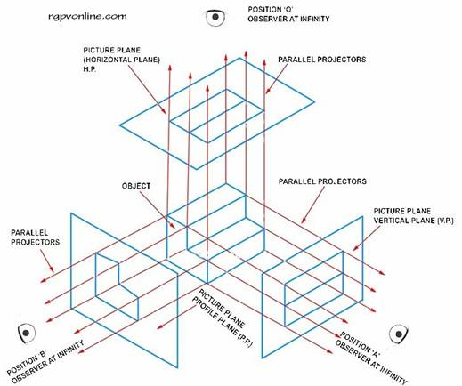

Orthographic Projections
The word orthographic means straight description. The straight description here stands for the parallel projectors from the object to infinity. If a perpendicular picture plane is inserted between the projectors, a picture is formed having the same shape and size as that of the object. If an observer at position ‘A' moves to infinity, the projectors to his eyes becomes parallel to the object and he observes the same shape and size as that of the object. The view so formed is known as the orthographic projection. Similarly,

View from Parallel Projection
the parallel projectors shall form the pictures on the respective picture planes from the positions B and C. Usually two views are sufficient for simple objects, but the help of three or more views is necessary for complicated objects. These picture planes are mutually perpendicular to each other and are known as ‘Principal Planes' of projectors, named Horizontal Plane (HP), Vertical Plane (VP) and Profile Plane (PP).